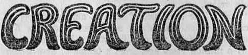
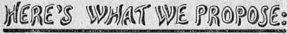
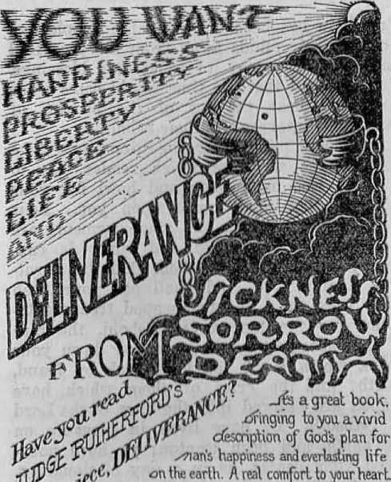
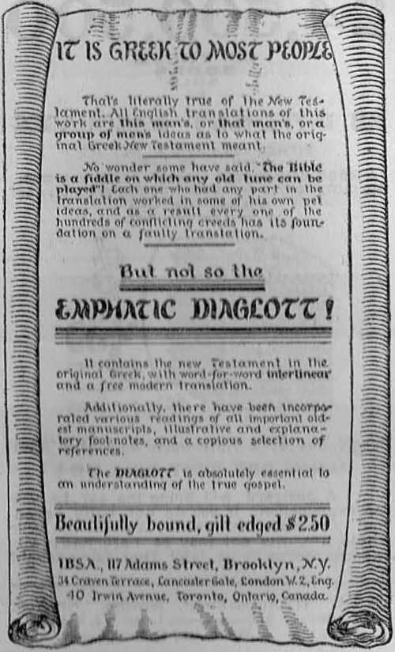
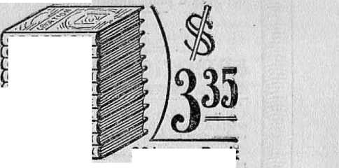

written by
J. F. Rutherford author of
Creation Deliverance!
The Harp of God Hell
Our Lord’s Return Where are the Dead? etc., etc.
Publishers
International Bible Students Association
Watch Tower Bible and Tract Society - Brooklyn, New York, U. S. A.
London, Toronto, Melbourne, Cape Town, Magdeburg, Berne, etc.
rniNTRD in r. s, a.
Copyright 1028 by INTERNATIONAL BIBLE) STUDENTS ASSOCIATION Brooklyn, N. Y,
A LL person^ like to be prosperous. Every sane man desires to better his own condition and that of his family. He realizes that it is his duty to gather such information as will be helpful to him and to his loved ones. When persons meet, a conversation follows; and it is most natural for them to discuss the times and the business conditions and to exchange ideas as to future prospects. Some men study conditions more closely than do others; and the advice of such is heard with interest. If one giving advice is known to be honest and fearless, his words often bring comfort and encouragement.
It was on a Sunday morning early in October. The sun was shining brightly, and the soft breezes blew from the south. Two men strolling through the public park met, and to pass away the time seated themselves on a convenient bench and engaged in conversation. Later, a third man walked that way, and was invited to express his views. What followed is of absorbing interest to all who keep abreast with the times.
Mr. Craving: If everything were as bright as this Sunday morning, and as beautiful as 3
4 Boosters’ Meeting
this park, this would ho a fine world to live in, wouldn’t it?
Mr. Adversity: How true is your statement!
Mr. Craving: How is business with you? What is the prospect as it appears to you?
Mr. Adversity: Not so good as I would like it. I note some of the papers are stressing prosperity, and telling the people how well they arc getting on and why they should be so fully satisfied with the present conditions. It is difficult for many of ns to see it that way. I cannot help but doubt the sincerity of those who speak in this vein.
Mr. Craving: That reminds me. I attended a very interesting meeting the other evening. There was a big crowd present and some enthusiasm. Speeches wore made by very prominent men. The speeches were quite interesting to me. Would you like for me to tell you about them?
Mr. Adversity: Please do so.
Mr. Craving: Well, the first speech was made by the president of one of the great corporations; and the substance of it was this: "The prosperity of tin.* people depends largely upon the corporations of the land. It is true that these corporations have amassed great material wealth, but this wealth is used for the benefit of the people. We have budded great trunk lines of railroads, steamship lines, electric power lines, erected great power plants
for public service, builded airships and made traveling luxurious. We have furnished the money that has builded our great factories of the country. Our wealth has reclaimed the deserts and made them blossom with vegetation. We have builded up a great commercial system. Our money has builded telephone and telegraph systems; and now we have a great radio system which is to come more fully under the control of the corporations. We support the colleges and universities, build hospitals and churches, and uphold the Christian ministers of the land. We have builded battleships and submarines; and in time of war we furnish the material for defensive and offensive operations. It is true we make great profits, and we are entitled to them. The earth is ours, and we make the world a fit place to live in. The people now have automobiles, comfortable homes and many other luxuries, due to our enterprise and our wealth. The world is getting better, and we have made it so.”
Don’t you think that sounds pretty good? You know I am w’orking for a corporation; and when a fellow has a great corporation back of him, he feels as if he can do something. Well, I must tell you about the next speech. That was made by a big man they call a statesman or politician. He said:
“My friend who has just preceded me has told you of the power of wealth, and of the
great good it has done for the people. He has spoken well. Yon will observe that when election time conies around, the corporations are always called on to furnish the money, and are on the right side and see to it that men are elected who look after the best interests of the country. We arc working together for the good of the people. Look at what good we have accomplished in the country. In 1917, when we were threat cued with invasion by a foreign foe, we quickly drafted and passed war measures, and without delay put into the held a great army which covered itself with glory. We have made the laws and enforced them. Wo possess the qualifications to govern the people, and the people want us to govern them. We know what the people want, and we see that they get it. The powor wielded by the concentrated wealth of the corporations, and the wisdom displayed by our statesmen, are safeguards of the great commonwealth. The clergymen have joined ns; and we find ourselves a Christian nation making the world a fit place to live in. Tim people are made secure in their property, life and liberty and have every reason to be satisfied and content. The earth is for man, and man for the earth. The people are patriotically supporting our institutions, while we look well to their interests. Of course there is some more improvement which might be made; but with a freer hand to operate in the building of
great navies and aircraft and preparation for wax- we will make the country secure, and under our rulership the world will be entirely safe for democracy.”
Don’t you think that was a remarkable speech? You cannot beat our corporations and our statesmen. What do you think about it?
Mr. Adversity: Well, go on and tell me what the other man said.
Mr. Craving: He was a preacher, one of tire regular doctors of divinity. I tell you he was an eloquent man, too. He stuck out his chest, and made the hall ring. He began his speech by saying;
“As you know, I am a Christian; and I rejoice to be associated with my Christian friends who have just preceded me upon this platform. I am glad to welcome them into our Christian fold. They are really the principal ones of our flocks. The time was when our Christian organizations were not so popular; but now I am pleased to say that the strong and mighty men of the land have been brought into our midst, and we lean upon them. We are standing shoulder to shoulder for the great good of humanity. What we need today is more men of red blood like these men. In times of war they look after our general welfare, and in times of peace they make the country prosperous. One of the great factors in making the nation strong
is the church. Today no great political party can go forward without the church. It was freely admitted that the World War could not have been won without the ministers. No great financial scheme can be successfully prosecuted without the spiritual advice and comfort given by the clergy. In times past we Christians fought about our creedal differences, but now we are united in a great federation, and I beg to remind yon that the man who took the lead in forming the Federation of Churches was one of the greatest financiers America ever produced. Today his distinguished son towers head and shoulders among the great financiers. Tie likewise is a supporter of the Federation of Churches. Once we differed about the Bible; but now we are united for one purpose; and wo welcome to our fold all men, regardless of their views concerning the Bible. Today the Christian church, the power of wealth, and the statesmen of the world should stand shoulder to shoulder. In fact, we are one; and our combined power’ and influence are destined to bring peace on earth and good will toward men, even if we have to fight for it to the bitter end. Soon we will have robed this earth in God’s glory by the moral achievements of men. Then we can expect Christ to come.”
Now, don’t you think, Mr, Adversity, that was a powerful speech? What would we do without these corporations and our statesmen
and the churches? The church hells are beginning to ring, and within half au hour services will begin, and I am wondering if I had=not better go over there and join that church on the other side of the park. I like to be in with the influential ones. But tell me, first, what do you think about those speeches?
Mr. Adversity; If words mean anything, those speeches would be wonderful. But there is something about them that doesn’t just gibe with real sincerity and honesty. May I tell yon a little of my experience and observation? Ten years ago I was operating a grocery business over there at that corner store. I was selling on a small mrjpgin, but making a reasonable profit and a living for my family. Corporations began to establish chain stores in the neighborhood. These stores undersold me until I was forced to the wall and had to go into voluntary bankruptcy. Other stores in this city have shared the same fate. Now these chain stores control the business, and the prices of food stuffs have gone up, and the people have to pay the price.
Then, again, I bought a house, that I might have a home for my family. The officials kept raising the taxes until I could no longer afford to meet my taxes and keep up my payments; and I was compelled to give up the house. I lost it. Now I am renting where I can. You will observe that the corporations now own many of the houses.
10
When the great war came, my friend Wilson was in the furniture business near me. His son, just past twenty-one, a bright young fellow, was in partnership with his father. The conscription military law was passed by the politicians, or statesmen, as they call them; and this young man was forced to go to war, and his father was forced to buy bonds and war stamps. The young man was killed in action in France. The father’s business went down. He was greatly distressed from loss of his son, and soon died in great sorrow. His widow is now having a difficult time to get on. I well remember being at the church over there you speak flf, and Wilson’s son attended it. It was just the week when war was declared. I heard the preacher make a very impassioned speech urging the young men to go to war and to kill. I thought the churches were for the purpose of preaching the gospel of Jesus Christ. I had great difficulty in harmonizing that preacher’s statements with what I know about the Bible. During the war that preacher and many others were making speeches in their churches, urging the people into the war; and their pet phrase was: “The war will make the world safe for democracy.” I have not seen any real democracy since the war, have you? There is a great deal more of dishonesty amongst the officials than ever before. The papers are full of political scandals. The people have practically nothing to
say as to who shall fill the offices, because the corporate interests control politics. You will note that the goods that are manufactured today are shoddy and faulty. The buildings are put up dishonestly. In fact, the world has been made much worse by the war.
I know that the people have automobiles and other conveniences; but they have been induced to buy them on time payments, and a great many fail to meet the payments, and they lose what they have purchased. It is true that a few men are prosperous and powerful; but are the people generally keeping abreast with the progress of the favored interests ?
Mr. Craving: I must admit that all you have said is true. I note that the newspapers are boasting of great prosperity. If what those men stated at the meeting is not true, I wonder why the press does not expose them.
Mr. Adversity: It is difficult to understand. There must be a good reason. But I cannot explain it to you. There comes a gentleman walking this way that I. know. His name is Success. That is a good name, isn’t it? He seems to be very prosperous; and look how smiling and apparently happy he is. I know him to be a deep student and have talked to him a little along these lines. I am going to call him and ask him to sit down here and give his views on these questions.
Mr. Success was informed concerning what had passed between Craving and Adversity, and was asked to express his views on present conditions and the prospects for prosperity.
Mr. Success: Gentlemen, I have given much consideration to the questions you are discussing. I feel sure that I have the truth concerning the cause of the present conditions and understand how prosperity is coining to all the people. To explain to you what I have in mind would require some time, and probably you would not care to listen to me at length.
Both Mr. Craving and Mr. Adversity insisted that they would be glad to listen in patience, and urged Mr. Success to speak on. This he did.
Mr. Success: At the outset I must say that I am a Christian. By that I mean that I believe and accept Jesus Christ as the Savior of mankind. I believe that Jehovah is the only true God, that Christ Jesus is his beloved Son, and that the Bible is God’s Word of Truth, and that from it alone can we be properly instructed. If a man claims to be a Christian, and poses before the people as a Christian, then he should not object to being judged by the Bible. He should be willing to accept the Bible statements as true. If, on the other hand, he poses as a Christian and then denies the Bible and denies God and Jesus as the Savior of the world, then we must all agree that he is a hypocrite. If he is a hypocrite, then tie is dishonest. If lie is dishonest, his words conut for nothing, because you could not rely upon them.
You know of the adage that “birds of a feather flock together”. A man may be prop-only judged by his associates. I have been quite interested in listening to the substance of the speeches made by the gentlemen mentioned by Mr. Craving. If you care to hear it, I will be pleased to submit some proof to show you why the corporations, the politicians and the preachers are standing together. From this evidence you may be able to see whether their schemes are honest and in the interest of the people or to the contrary. Following that, then, I would like to submit to you some indisputable evidence showing that there is a way by which all the people will have a full and fair show for liberty and prosperity. This latter part more particularly interests me, because it shows how the people will be relieved and made happy. By your permission I shall proceed.
THE CLERGY
In the first place, the clergymen are not Christians. A Christian is one who believes that God through Christ has provided salvation for mankind. The clergymen as a general rule do not believe that. They pose before the people as preachers, and yet they are diligent in keeping the people away from the Bible, Daily they are becoming bolder in denying the Bible; and instead of referring the people to the remedy God has provided, they are telling the people that big business and the * politicians and themselves are their guardians and saviors; The majority of these clergymen call themselves Modernists. That means that they deny the Bible account of creation, and the fall of man, and the redemption through Christ Jesus’ sacrifice. The scheme is to turn the minds of the people away from the Bible and away from God, and turn them to the worship of men or other creatures. Why is this true? you may ask. Briefly the reason is this:
God created the first man perfect and placed him in Eden, the garden of the Lord. God made Lucifer, one of his great angelic beings, overseei' or overlord of man. Lucifer was ambitious to have men worship him; and to accomplish his purposes he induced man to violate God’s law. The penalty for that wrongful act was death. God sentenced Adam to death and expelled him from Eden. Bead this in the third chapter of Genesis. Because of this wrongful act, all of Adam’s children were begotten in sin and born in iniquity. (Psalm 51:5) Since then, men have been dying, and would remain for ever dead unless God in the exercise of his loving kindness makes provision for man’s redemption and blessing. Long ago God promised to provide redemption.
He promised that he would redeem mankind and then establish on earth a government of righteousness for the blessing of all people.
At the time Adam was expelled from Eden God changed the name of Lucifer to that of Satan the Devil. Satan means opposer, and ever since then he has been opposing God. Satan has employed numerous schemes to turn the people away from Jehovah. God could have prevented him from so doing; but the Bible shows that it is God's purpose to let man have a full lesson in the effects of sin and then to show him the privilege of obeying righteousness and receiving great blessings that he has in store for man. God selected Israel to make of them a model nation and to teach them and through them the way leading to life and happiness. That people had their religious services; and the Devil turned the clergymen of Israel away from God, so that when Jesus came these men claimed to represent God but in fact represented the Demi and deceived the people.—John 8:42-44.
There is a true Christianity, and there is a false so-called Christianity. This organization, so-called Christianity, is also called Christendom. True Christians believe the truth and delight to tell God’s truth to others. False or so-called Christians yield to the influence of Satan, deceive many, and lead the people away from God. I could cite you numerous instances of this kind.
You will admit that Bishop Gore and Bishop Barnes, two of the most distinguished clergymen of England, are good samples of what the clergymen are doing. In the London Daily Express of September 19, 1927, appears a speech made by Bishop Gore at Grosvenor Chapel, Mayfair, London. He denied the credibility of the Bible and said of the writers of the Bible that “they are masters of storytelling”. Here are some of his words:
We are nourishing a vain hope if we suppose that the early chapters of Genesis or the stories about Daniel and Enoch are ever going to be accepted as history.
They have none of the characteristics of history as real science has learned to detect them, and it is no good kicking against facts. We will merely delay the necessary adjustment of Christianity to the new world of ideas by going on murmuring, and perplexing the minds of our children, instead of being perfectly frank with our own minds and with others.
The Westminster Gazette, of London, on Monday, September 26, 1927, reports the speech of the Reverend Dr. Barnes, Bishop of Birmingham. This is what ho said:
Dr. Barnes was preaching to a large congregation, among whom were many of the boys of Westminster School. He, like Bishop Gore last Sunday at Grosvenor Chapel, Mayfair, took for his subject the views of the scientists at the British Association meeting.
“In this age of social and moral confusion, of intellectual progress and unrest, the turmoil was so great that few landmarks seemed safe, and the religious beliefs and traditions of our forefathers were sharply challenged,” he said.
Were they to ding to the old faith? He would rather say: “Welcome new discoveries with an open mind and reverence the great men who made them. But let them remember that, behind all the new knowledge, the fundamental issues of life would remain veiled.
“Today,” he continued, “there is, among competent men of science, unanimous agreement that man has been evolved from an ape-like stock. He arose, possibly a million years ago, from a tangle of apes which began to vary in different directions.
“As a result the stories of the creation of Adam and Eve, of their primal innocence and of their fall, have become for us folklore. But by the men who built up Catholic theology they were accepted as solid fact. Man’s special creation was one of the primary assumptions of the Catholic system. In it the fall explained the sin.
“Darwin’s triumph has destroyed the whole theological scheme. Man is not a being who has fallen from an ideal state of perfect innocence: he is an animal slowly gaining spiritual understanding and, with the gain, rising far above his distant ancestors.”
In America the major portion of the clergymen hold exactly the same views as expressed by the two bishops above mentioned. Such men are not safe advisers of the people. They are the counterpart of the Jewish Pharisees. They have a form of godliness but deny the power thereof, even as the Apostle Paul said they would.—2 Timothy 3; 1-7.
Mit M6 W6 you you you £V£R £V£R £V£R_ THOUGHT READ (POKED 07=^ ABOUC /MTO
A Book you wifi not lay dowr> until you fjave read f-fjrougf) to ffje last word.
Heaven- Wfjat and wfjere is (f £
Angels - A myfl) or oof ?
Earff) - Mow old, fjow Formed ?
Human Beings - From monkeys or wfjaF?
Woafj's Flood ’ Traditional or real? Coal and Oil - Vegetable Origin?
fl Thousand questions answered reasonably, scientifically, logically, scripkiralfy,
24 foyr-color plates.
Remember?
We.say you will read to tf)<a last word.
By J.F Bzitherford.
Cfoffjbound, 384pages. Post-paid 45c.
THE WAIi
The clergy as a class claim to be followers of Jesus Christ, and make the people believe that they are. The Scriptures designate Jesus Christ as “The Prince of Peace”. When he was on earth he repeatedly declared the law which his followers must obey: “Thou shalt not kill.” Any one who is a true follower of Jesus Christ must be obedient to this command. Anyone claiming to be a follower of Christ and who at the same time urges men to kill each other is a hypocrite and party to the crime of the killing. There might be some excuse or extenuating circumstances for men who know nothing about the Bible to engage in war, but there is no excuse or extenuating circumstance in favor of a Christian voluntarily engaging in war or urging others to do so.
During the World War of 1914 to 1918 the clergymen advocated war, urged young men to go to war to kill their follow men, used their church buildings for recruiting stations, and denounced and persecuted every one who expressed conscientious scruples against killing. Everybody knows this statement to be true. They went even further than that. Many of the clergymen told young men that if they would go to war and die upon the battle-field, their blood would be counted in with that of Jesus and their souls ■would immediately be winged off to glory. They should have known better; because war is murder and no murderer has eternal life. (1 John 3:15) If these men, contrary to the Word of the Lord, advocate the killing of other fellow men and at the same time claim to be Christians, they are both hypocrites and unsafe advisers of the people. The evidence is too voluminous for me to cite all of it; but I give you here some, naming the clergymen who are guilty of duplicity.
There never was any danger of Germany invading America. Every sensible man knew that that was impossible. And yet some of the most zealous advocates of America’s entering the war were the clergymen.
The Reverend S. Parkes Cadman, an Englishman who resides in America and who is president of the organization called the Federal Council of Churches of Christ in America, just before the war and while answering questions before the Bedford Branch of the Y. M. C. A. in Brooklyn passionately exclaimed: “Prepare! Prepare! Prepare! for war.” When he was asked his opinion of students who refused to engage in military training he replied: “They are parasites, suckers, and rubbish. The teacher that teaches them they have no right to bear arms for the state should be fired out of his position.” Dr. Cadman with others boasted of the fighting rector, Dr. Reiland.
The Massachusetts Clerical Association was one of the first to vote for America to enter the war, and a delegation of the prominent clergy visited Washington to combat the “unchristian influence” of pacifists. They made it their business to use their church buildings for the preaching of war sermons. When the government enacted the conscription law and inserted a section making it possible for a Christian to decline active military service, nearly every clergyman in the land opposed those who took advantage of this provision of the law. They spoke of such men as “poor pussy-foot pacifists”.
Dr. S, E. Young, of the Presbyterian church, called them cowards and traitors because they expressed their belief in God and in Christ and insisted on obeying God rather than man.
Bishop Kinsolving, of Texas, declared that “such men should be driven not only from the country, but from the earth”.
The Reverend Howard Ganster, of Waukegan, Ill., “advocated the organization of a society for the committing of murder of persons who do not stand up or who leave the building when the ‘Star Spangled Banner’ is played.”
Dr. Henry van Dyke delivered a so-called sermon, and referring to a gentleman who was candidate for mayor in New York, and who was against America’s entering the war, said: “I would hang every one, whether or not he be a candidate for mayor, who lifts his voice against America entering the war.”
Reverend Gillis, a Catholic, said: "Jesus Christ is the Prince of Peace, but Pontius Pilate was the Prince of Pacifists.”
Bishop Cooke advocated that those who desire to take advantage of the law for non-combatant service should 'he deprived . . . of all political and social and civil rights”.
Dr. Eaton was made chairman of the National Service Section of the Emergency Fleet Corporation, and performed the duty of delivering fight-talks in the shipyards. He said: "When a spy comes sneaking around with a bomb don't say, TLet us pray,’ but take him out there on the marsh and tie him down and place the bomb on his chest. Light it and stand off and watch him blow to his Kaiser, to hell! Be regular he-men.”
Evidently Eaton’s conscience hurt him so much after the war that he got himself elected to Congress from New Jersey.
The Reverend W. W. Bustard, John D, Rockefeller’s loyal servant, from his pulpit exclaimed: “To hell with the Kaiser!”
Dr. Newell D. Hillis, of Brooklyn, pastor of the Plymouth Church, was one of the most vehement advocates of America’s entering the war. When the nation did enter the war, the American Bankers’ Association sent forth Hillis as its missionary to preach war. He prepared the sermons which hundreds of thousands of
IN SATISFACTION GENUINE PLEASURE 5S AND SHEER. JOY
to know
ese three ade-old riddles*?
IgB WHAT AND WHERE IS HELL? gflii WHERE ARE THE DEAD ? WILL JESUS COME TO EARTH AGAIN ?
Three 64-page booklets each answering one of the questions,
ho technicalities , no hocus-pocus,no ''maybe this or* maybe that’1, no ecclesiastical bunlc; but positive, straight-fronvthe-shoulder -facts; just common, or-* di nary, good sense; and as simple as ABC/
the 3 for 25 c, post-paid. Is 25 c too iftUeht
I.B.S.A. 117 Adams Street, Brooklyn, New York
For Foreign J4 Craven Terrace, London W 2,' England
Frias Applj; 40 Irwin Ave., Toronto 5, Canada
other pastors delivered, urging young men into the trenches. When the war ended and millions were in sorrow because of what had happened, Dr. Hillis, instead of visiting the widows and orphans as the Scriptures command that a Christian shall do (James 1:27), still continued to express his vindictiveness and venom against the helpless people of Germany who had been driven into the war by their war machine. Hillis said:
Society has organized itself against the rattlesnake and the yellow fever. Shepherds have entered into a conspiracy to exterminate the wolves. The Boards of Health are planning to wipe out typhoid, cholera, and the black plague. Not otherwise, lovers of their fellow man have finally become perfectly hopeless with reference to the German people. They have no more relation to the civilization of 1918 than an orangoutang, a gorilla, a Judas, a hyena, a thumbscrew, or a scalping knife in the hands of a savage. These brutes must be cast out of society. . . . There will shortly be held a meeting of surgeons in this country. A copy of the preliminary call lies before me. The plan to be discussed is based upon the Indiana State law. That law authorizes a State Board of Surgeons to use upon the person of confirmed criminals and hopeless idiots the new painless method of sterilizing the men. These surgeons are preparing to advocate the calling of a world conference to consider the sterilization of 10,000,000 German soldiers and the segregation of their women, that when this generation of Germans goes, civilized cities, states and races may be rid of this awful cancer that must he cut clean out of the body of society.
No general, no man in the army, nor any warlord ever gave utterance to such diabolical and wicked words as those written by Hillis. These clergymen are the ones who, with pious faces and sanctimonious words, tell the peoples that their organized system of oppression and murder represents Christ on earth and therefore constitutes "organized Christianity”, or “Christendom”.
Reverend George Atwater directly linked the so-called Christian church with the war. When the war was at its height he said:
The complete representative of the American Church in France is the United States Army overseas. Yes, an army, with its cannon and Tifl.es and machine guns, and its instruments of destruction. The Church militant, sent, morally equipped, strengthened and encouraged, approved and blessed, by the Church at home. The army today is the Church in action, transforming the will of the Church into deeds, expressing the moral judgment of the Church in smashing blows. Its worship has its vigil in the trenches, and its fasts and feasts; its prayers are in acts, and its choir is the crash of cannon and the thrilling ripple of machine guns.
In the House of Representatives at Washington in January,,1918, the Reverend Billy Sunday was invited to deliver the morning prayer. He would make it appear that the Lord is as bloodthirsty as some of the clergymen. He said: "Thon knowest, O Lord, that no nation so infamous, vile, greedy, sensuous, bloodthirsty, ever disgraced the pages of history. Malte bare Thy mighty arm, 0 Lord, and smite the hungry, wolfish Hun, whose fangs drip with blood, and we will for ever raise our voices in Thy praise,’3 The newspapers recorded that when Sunday finished his harangue, for the first time in its history the House applauded a prayer.
It is not surprising then that Admiral Fiske, of the United States Navy, said: “The Christian religion is at this moment being made to exert a powerful influence, not towards peace but towards war.”
As a true evidence that the political powers appreciated their allies the preachers, Secretary Lane said that “the war could not have been won without the churches”.
My point is this, gentlemen, that if the preachers wish to advocate war they should cease claiming to be Christians preaching the gospel of peace and good will tow'ard men. If they want to follow the Lord Jesus, they ought to be honest and tell the people what he taught, and cease being hypocrites. The clergymen in Germany and in Austria took a position identical with that taken by the clergymen in England and Ajpcrica in urging the people to engage in killing their fellow men. All of these preachers claim to worship the same God. In fact, they do worship the same god, but not Jehovah God. They worship and follow the god of this world, who is Satan the JJeyil.
Cap^ive-tirtg'! Exiraorcl.iTLa.Ty 1 is this story of Adm Joy a young man whose life ended in a tragedy
But is death, really a tragedy ?
Does life end at the grave ?
Does man continue to exist after death?
A ran? treat, indeed,awaits _
every reader of "WHERE ARE THE DEAD?" written by Judge <J. J'. F^iilhcr/'orcl
Sixty-four pages jOJeeora/tiue i^brep in'^hvce grolor^p POST- PAID TEN CENTS
I. B. S. A. 117 Adams Street, Brooklyn, New York For Foreijgii 34 Craven Terrace, London W 2, England
Prices Applj. 40 Irwin Ave,, Toronto 5, Canada
CORPOBATtONS
It is not my purpose to light corporations. It would be useless for a man or even a number of men to fight these great giants. My purpose and business is to c-all attention to the truth, that the people may see what is hypocrisy and may learn howT real prosperity will come to them; also to show the people that the clergymen do not represent God and Christ, as they claim, but represent the great enemy Satan. For this reason it is necessary to look at some of their associates ■with whom they are working.
A corporation is created and organized by the law. It is organized that it may continue perpetually. Those who organize and control a corporation are usually selfish men who, like other men, sicken and die. A corporation, however, continues because men succeed each other in office of the corporation. A corporation, being an inanimate body, is of itself guilty of no wrong. It is used, however, by selfish men to commit -wrong. The corporation itself produces no wealth. As a rule the men who manage it produce nothing. A corporation holds together that which selfish men by scheming bring into its coffers. Corporations could be used for much good if controlled and operated by men who are moved "with an unselfish desire to help their fellow creature. Most of the men who control great corporations are lovers of money. “The love of money is the root of all evil.” It increases man’s selfishness and causes him to be harsh, cruel and oppressive. The corporation, once receiving its franchise, feels no obligation to the people and renders the people no favor without being highly paid therefor. It is true that the people receive some benefit from the operation of corporations; but if these mighty organizations were operated justly and unselfishly, being satisfied with a reasonable profit, the people would be greatly benefited. If they were not used to influence and control the politics of the country, the people would be saved from many burdens. The rule is that the ■ men who organize and carry on great corporations are moved entirely by a selfish desire to acquire wealth and power.
CHAIN STORES
The farmers and laborers produce the food and raiment of mankind. This must he put into the hands of the consumer. Men establish stores where the produce may be sold and where the consumer may purchase. For some time the merchant or storekeeper made a modest profit for his labor; the producer got a reasonable price for his product: while the consumer bought at a reasonable price. The strong corporations came into the field. They have established what are called chain 'stores, which means they have a large number of -tores throughout the land. They compel the producer to sell at a low price. How? you ask. They say to the producers: "You may sell to the small buyer if you want to; hut if you do, we will buy none of your products. We must have all or none.” For a time the corporations pay a reasonable price to the producer, even more than the small merchant. For a time they sell at a loss to the consumer and until such time that the small merchant is forced to close his doors. Then the corporations reduce the price to the producer, raiqe the price charged to the consumer; and therefore the corporations, which own the chain stores, fix the prices of both the producer and the consumer, and force the small man out of business. These chain stores are operating throughout America and England. The purpose is to control the food supply of the earth while the selfish themselves grow wealthy. Tn this connection I am reminded of what the Lord through his witness had to say; but I will call your attention to that later.—James 5:1-6.
B&WKS
The people get some good from the banks, of course; but they pay for what they get and then some. The small banks are gradually passing out. The wealth of the country is increasing. It should be expected that there would be more banks for the accommodation of the people. The facts show that in 1927
there were 524 fewer banks in the United States than in 1921. The big corporations are swallowing up the small banks. When the big banks control all the business of the country, then the people will have less consideration shown them, because there will be no competition, and selfishness will entirely control. The banks, being fewer in number and greater in power, can more easily control the business and the politics of the land.
Great and powerful banks pool their interests and loan money to nations or governments upon bonds issued which the taxes of the people must pay. That scheme enables a few men to directly control the policy of the government. They make enormous profits in the transaction, but not because they have produced anything. The people produce the wealth, and a few selfish men wax rich by manipulating schemes to obtain and control it.
MANIPULATING STOCKS
Almost all big corporations issue stocks and bonds, and put them on the stock exchange for sale. There are two classes of men that always operate on the stock exchange, called "hulls” and ‘hears”. They usually work together. The bulls manipulate the stocks and force them on a high market; and when they reach a high point they sell out to the gullible public, some of whom think they can make a fortune by gambling in stocks. Then the bears come
32
to the fore, and they force the price of the stocks down. The gullible public become frightened and sell their stocks; and the big corporations buy them ■ in at a low price. They constantly work this game at regular intervals; and as the old colored man said about his coon traps: “They ketch ’em, cummin’ and gwine.” .
FABULOUS INCOMES
Ton great corporations in the United States have been in existence on an average of thirty-six years. The average annual dividends that they pay on watered stock are forty million dollars.
The financial record in the United States Treasury’s office discloses that in one year (1919) seventeen woolen mills made a clear profit of 100 percent on their capital stock; that corporations operating canning factories that can the fruit and vegetables produced by the hard labor of others in one year made a profit of 2932 percent; that clothing stores made a profit in one year of 9826 percent; that the aluminum trust, with a capital of only $20,000, in one year (1923) made a profit of 1000 percent.
Five big corporations in the United States have increased their assets fifty-five percent within five years.
PUBLIC SERVICE CORPORATIONS
Public service corporations make fabulous profits. That name sounds attractive: "Service to the public”. One of these big corporations is the Consolidated Gas & Electric Company. Its operations extend throughout many states in America. A portion of its securities are sold to its employes and to the public. These securities pay six percent. This, like other big corporations, desires to get some of its securities into the hands of the public. There is a reason for this. You occasionally hear some small stockholder boasting and saying, "I hold some of the bonds of that corporation.” Another says, who is drawing a small salary as a servant: “I have a big corporation back of me.” The corporation, as the facts show, charges an exorbitant price for services rendered to the public. It uses the common people, who hold a small amount of the stock, to influence legislation in favor of themselves. A prominent financial journal is responsible for this statement: "A large utility corporation has estimated that if ten percent of the citizens of a community own some of its securities that corporation is immune to adverse legislation.” That is the reason why the public service corporations offer their securities for sale to the small investors. It is not because they need the money, but because they want to close the mouths of the common people to adverse criticism while they reach deep into the pockets of the people and extract an exorbitant amount for the service rendered. It is easy to be seen that one of the schemes is to cause the public to remain quiet while they are fleeced.
POLITIC AI.
There are very few statesmen left on the earth. Most men in public life are professional politicians. Politics is their business. A great number of them are either directly or indirectly in the pay of some big financial institution. High finance sees to it that all the leading political parties nominate for office men that can be influenced by the corporations. When the election is held, no matter who loses the corporations win and the people pay the bills.
Then a proposed law comes before the legislative body for enactment. If it is in the interest of liigh finance, it is enacted with little difficulty. But if the enactment of the law would work to the interest of the general public and against the predatory wealth, it lias little chance to become a law. Here is a sample:
Recently a bill was pending before the United States Congress, the purpose of which was to provide for the construction of a great dam across a river, which is known as the Boulder Bam. The dam would make possible the reclamation and cultivation of large areas of desert land, which would be in the interest of the tillers of the soil. A powerful corporation was opposed to the building of it because that dam would conflict with some of its interests. One Josiah T. Newcomb was general counsellor for that corporation. Actively engaged in opposing the enactment of the Boulder Dam bill he boastingly said: “I represent an investment of nine billion dollars, and we do not propose to let the government enter the power business at Boulder Dam. The bill has no chance to pass. It will not pass. If it changes it can go through at this session.” It did not become a law.
This meant that 120 million American people could not have their representatives in Congress enact a beneficial law because one gigantic financial institution did not want it enacted.
The Federal Trade Commission of the United States issued a statement to the effect that six companies controlled in 1922 one-third of America’s water power; eight companies controlled three-fourths of the anthracite coal reserve; and two companies controlled over half of the iron ore reserve.
These gigantic corporations could use their powers for the general welfare of the public, but they do not. They use their powers selfishly and to debauch and corrupt the lawmaking and law-enforcement bodies of the land. Occasionally a man in politics becomes so thoroughly disgusted with the wickedness of this organized power that he comes forth with a statement of facts to the people. Here is a sample:
Former Governor Pinchot of Pennsylvania said: “No one who studies the electrical developments already achieved and those planned for the immediate future can doubt that a unified electrical monopoly extending into every part of this nation is inevitable in the very near future. The question before us is not whether there shall be such a monopoly. That we cannot prevent. The question is whether we shall regulate it or whether it shall regulate us.”
Justice Ford, of New York, said:
"In my experience I hare found the public service corporations, the street railroads, the telephone, the lighting companies in particular, to be the most prolific source of political corruption in the state. They more directly depend upon governmental favors than any others, and indeed the profits of their business flow from the special privileges which they procure and. hold from the government, both state and municipal. In my day at Albany these corporations plied their nefarious business of corrupting the people’s representatives so openly that a blind deaf-mute could learn what was going on. Not that legal evidence could be found against them. They wore too shrewd for that. But every public man there was morally certain as to what was going on. and in private conversation it was freely talked about. These public service corporations pollute the very fountains of public virtue; they debauch our public servants; they subsidize party organizations for their own purposes. All the powers of government
37
are subverted to their base ends; and government of the people, by the people, for the people, is made a mockery.”
Even the courts are corrupted by Big Business. When Big Business is pitted against the common people, the people have no show in the courts. The words of Mr. Samuel Unter-myer are pertinent on this point:
“Nowhere in our social fabric is the discrimination between the rich and the poor so emphasized to the average citizen as at the bar of justice. Nowhere should it be less. . . . Money secures the ablest and most adroit counsel. . . . Evidence can be gathered from every source. The poor must be content to forego all these advantages.”
MAKE WAR
The power to make war is lodged with the political wing of the government, but the real power is exercised by big finance. War makes it necessary for governments to issue bonds, to be bought by those who have money. Profiteers decide that it would be to their advantage to have the country go to war. They own and control the largest newspapers. A systematic campaign of propaganda is begun and carried on by their press. Step by step these papers recount the numerous insults to which the people of the country have been subjected, and say that these should be resented by force of arms. Strong appeals are made to the pa-
38
triotism of the people in order to elicit their support. War is declared by the law-making body yielding to the influence of selfish interests apparently supported by the people. The politicians quickly pass emergency laws which compel every one of a certain age to render military service. The war is on, and the people are urged to buy the bonds to carry on the war.
Then the clergy are called into action. They become the spellbinders. They use their pulpits to harangue the people and urge them to go to war. When some of these preachers go with an army as spiritual advisers, they always manage to remain at a safe distance in the rear. They work hand in glove with their allies, Big Business and Big Politicians. They work up great excitement amongst the people, and then they are ready to go to any extreme.
The young men are promised better jobs when they return from the war. They arc told that the war will make the world safe for democracy and they will cover themselves with everlasting glory. They are told that if they die on the battle-field their names will be inscribed upon tablets of honor and their souls elevated to the highest place in the universe. After the war is over, the millions of youth fill untimely graves; millions of others are marred for life. And so far as the. survivors are concerned, the prewar pledges are forgotten; and the exsoldier is pushed aside with contempt. The war results in millions of widows and orphans who in groat grief struggle along for existence. It is soon found that the war has greatly increased the tax burdens of the people. It results also in a new crop of avaricious men who have learned to defraud and plunder the people. No good has resulted. The everlasting covenant that God made for the preservation of human life is violated.— Isaiah 24:1-6; Genesis 9: 4-9.
UNHOLY ALLIANCE
It is the three elements, namely, High Finance, Professional Politicians, and Faithless Clergy, that rule the people. When the war is over, together they continue to harangue Hie people saying, “In time of peace prepare for war. Give us more money to carry on our preparations. Patriotically support us, because we are the ones qualified to rule. Hear what we say, because wo are the representatives of God on earth.” The Federal Council of Churches issued a proclamation following the World War, .stating, “The League of Nations is the political expression of God’s kingdom on earth.” It is well known that the League of Nations was proposed and carried into operation by financiers and politicians and fully supported by the clergy.
10
You wonder why attention is called to these things. Is it possible to reform these three elements and make the country better by exposing them? No; not that. The purpose is to show that the clergymen are sailing under false colors and misleading the people; to show them that, the clergymen are unsafe guides; to show the necessity of a power greater than that of selfish men to bring the people relief and prosperity. Attention is called to the wickedness of Big Finance and Big Politicians not merely to denounce them, and with no hope of reforming them, but to show the class of men with whom the clergymen have entered into an alliance. Men are judged by the company that they keep. The fact that they deny the Bible and join hands with an oppressive class shows that the clergymen arc practising a fraud upon the people, and that so-called organized Christianity is a fraud and a snare. The people must see that their relief cannot come from such an unholy alliance; and seeing this, they will look to the proper source from which relief and prosperity will come. It is God’s due time for the people to understand the truth.
UNSEEN POWER
It must be apparent to any thoughtful person that back of the unholy alliance there is an unseen and evil power which has organized, operates and controls it. It is easy to he seen that it is fraudulent, that it is cruel and harsh, and oppressive. Who, then, is the master-mind that is responsible for the wicked and oppressive so-called Christian organization on earth? There is but one answer. It is Satan, that old Serpent, the Devil and god of this world, who has formed and operates the unholy alliance of Big Business, Big Politicians, and Big Preachers and operates it under the title and name of ‘organized Christianity". The purpose is to control the people and keep them in subjection to the Devil, and lo turn their minds away from the true, God. This unholy alliance rides upon the people, draws its substance from the people, and rules the people by fraud and coercion. The Pha risecs who constituted the clergy of the Jews wore controlled by the Devil, as Jesus stated. (John 8:43-45) Present-day clergy are the modern Pharisees, Jesus recognized Satan the Devil as the prince of this world. (Matthew 4:8; John 12: 31) Paul refers to his wicked schemes when he says: "[Satan] the god of this world hath blinded the minds of them which believe not, lest the light of the glorious gospel of Christ, who is the image of God, should shine unto them”—2 Corinthians 4:4.
ilfr. Craving: But I have always understood that the rulers of this world were ruling by
divine right? That is what the churches have taught us.
Mr. Success: That is another error they have taught. The Bible declares that God is love. Perfect love means the perfect expression of unselfishness. You can plainly see that Big Business, Professional Politicians and Faithless Preachers are entirely selfish in their efforts to keep the people under control. God could not approve anything that is wrong. God has permitted Satan and his agencies to control the nations' of the earth, and evil to go on in this, that he has not stopped it. He has been permitting the people to learn a great lesson, namely, that to follow wrong-doing leads to unhappiness and death. He is teaching them that he is the only true God and the Source of life and blessings; and when they learn this, they will appreciate the blessings which they may receive. He declares his purpose to stop wickedness and establish righteousness for the benefit of mankind. Experience is the best way to learn.
Mr. Adversity: I can see that the invisible power that controls this world is extremely selfish and evil. You say that power is the Devil. I have no doubt that is true. But that being true, what would prevent evil conditions to continue for ever? Is there no relief for the peoples?
THE BELIEF
Mr. Success: Thore is complete relief, ami lliat is near at hand. Selfishness and evil have come to a head, and a great change is impending. Long ago God, the Creator of heaven and earth, made a promise to Abraham: "In thy seed shall all the nations of the earth be blessed.” (Genesis 22:18) This promise was made at the time Abraham, in obedience to God’s command, was offering Isaac his only son as a sacrifice. God permitted the picture to be made, and then stopped Abraham’s action. God was there making a great picture which foreshadowed the manner whereby he would bring blessings and prosperity to the people. Abraham pictured God himself; and Isaac represented Jesus, the beloved Son of God. The “seed” through which the promised blessing must come is Christ Jesus our Lord. (Galatians 3:16, 27-29) Jehovah thus foreshadowed that he would permit his beloved Son to bo sacrificed io provide a redemptive price for mankind, and that thereby man would have an opportunity Io be blessed with life and happiness.
By inheritance all men came under the condemnation. (Homans 5:12) The only way redemption could be had was by the death of another perfect man. The Scriptures declare that Jesus was made a man and dwelt amongst men that he might redeem men from the curse of sin and death. Tiie love of God made this pro-
44
vision as it is written: "For God so loved the world, that he gave his only begotten Son, that whosoever believeth in him should not perish, but have everlasting life.”—John 3:16.
This being the way of redemption, it is the most natural thing to expect the Devil to inculcate into the minds of his representatives, and through them to teach the people, the doctrine that there is no value in the sacrifice of Jesus Christ.
The death and resurrection of Jesus made it possible for men to have everlasting life, because Jesus came that the people might have life. (John 10:10) By the grace of God he tasted death for every man. (Hebrews 2:9; 1 Timothy 2:3-6) The Scriptures declare that his death and resurrection are a guarantee that in God’s due time all men shall have a fair trial for life. The Scriptures plainly state that God has appointed a day for this very purpose. (Acts 17:31) That day must come, and it is now at hand. From the time of his resurrection until his second coming and kingdom, God has had the truth preached in the world that a few men might accept it by faith and follow in Christ’s footsteps and be ■witnesses for Jehovah.
God has not interfered ■with Satan’s wicked rule during that period of time. Satan, knowing that God had promised to bring blessings to the people through Christ, knew that true Christianity would be the very thing that the people would want to learn. Therefore Satan set about to organize a false system which he has called ‘"organized Christianity” or “Christendom”; and this he did for the purpose of deceiving the people. You can see that, there is a true Christianity, and a false system which names itself Chris tianity and which is extremely selfish and wicked. You can see that such wicked system is the work of the Devil, and not the work of the Lord. The Scriptures also declare God’s purpose through Christ to destroy the work of the Devil, as it is written: “He that eommitteth sin is of the devil; for the devil sinneth from the beginning. For this purpose the Son of God was manifested, that he might destroy the works of the devil.*'—1 John 3:8.
Mr. Adversity: Does that mean, then, that the so-called Christianity of Christendom is the Devil’s instrument, and it is going to he destroyed ?
Mr. Success: That is exactly right. With the destruction of that evil system the people will be completely delivered. They will learn the truth, learn that Jehovah God is their groat Benefactor, that Jesus is their Redeemer and Deliverer; and they will enter upon the way of life and prosperity.
God caused a great picture to be made foreshadowing the fall of Christendom. That was long centuries ago. The Israelites were
46
God’s chosen people; and they were domiciled in the land of Egypt, where the ruler of Egypt greatly oppressed them. They cried unto God, and God hoard their cries and sent Moses to Egypt to act as their deliverer. (Exodus 3:2-8) Then God delivered his chosen people from Egypt by leading them safely across the Red Sea, and at the same time destroying the Egyptian army and rulers. In that picture Egypt represented the Devil’s organization; and Pharaoh the king represented the Devil himself. The Israelites pictured or represented the peoples who desire to know and to do God’s will. Moses, who acted as the deliverer, represented Christ, the great Savior and Deliverer of the peoples of earth. The overthrow of the Egyptians represented the fall of the Devil’s organization, which includes “Christendom” or so-called “organized Christianity”. A full discussion of this matter may be found in the book Deliverance, which is published by the International Bible Students Association.
CHIES OF THE OPPRESSED
Both of you are familiar with the perplexity and unrest and dissatisfaction amongst the peoples of earth. The people are familiar with the cruel, harsh and unrighteous treatment they receive at the hands of the unholy alliance. That unholy alliance made up of Big Business, Professional Politicians, and Faithless
-^5ound in blue cloU i.golil slamped
Mailed airy where for 33c
I. B. S.A. 117 Adams Street, Brooklyn, New York for Foreign 34 Craven Terrace, London W 2, England I’rfcej Apply; 40 Irwin Ave., Toronto 5, Cwodu
48
Preachers has been deceiving the people and turning their minds away from the true God and from the way of relief and blessings. God declared that the time would come when he would hear the cry of the peoples of earth and intervene in their behalf.
Having in mind these conditions, now take note of the scripture which reads: “Go to now, ye rich men, weep and howl for your miseries that shall come upon you. Your riches are corrupted, and your garments are moth eaten. Your gold and silver is cankered; and the rust of them shall be a witness against you, and shall eat your flesh as it were fire. Ye have heaped treasure together for the last days. Behold, the hire of the laborers -who have reaped down your fields, which is of you kept back by fraud, crieth: and the cries of them which have reaped are entered into the ears of the Lord cf Sabaoth. Ye have lived in pleasure on the earth, and been wanton; ye have nourished your hearts, as in a day of slaughter. Ye have condemned and killed the just; and he doth not resist you. Be patient therefore, brethren, unto the coming of the Lord.” — James 5:1-7.
It is remarkable how accurately God through his prophet long ago described present conditions. He pointed out that in the last days of the present evil w’orld, or the rule of unrighteousness, there would be perilous times, that men. would be lovers of themselves more than lovers of God, having a form of godliness but denying the power thereof. (2 Timothy 3:1-5) This is exactly what wo seo today. Then ho caused his prophet to give a description of the great world powers in the order in which they have arisen and fallen. The Prophet Daniel in the second chapter gives a prophetic, description of these world powers, lie foretold there would he an effort on the part of the rulers to amalgamate the common people, in a groat military machine. That is exactly what, wo sec going on now, because the countries of Europe have conscription laws that force the people into war. America will do the same thing when war is declared. All these countries are making great preparations for war, and yet at the same time talking about peace. The last of these world powers described is the British Empire, the greatest the world has ever known. The rulers in America are allied with them, al least secretly if not openly.
The League of Nations is the outgrowth of an alliance between the nations of earth, and is described in the Scriptures as the "eighth kingdom”. The Lord then shows that his kingdom is represented by a stone Which smites these world powers, and destroys them. Note this scripture: “And in the days of these kings shall the God of heaven set
50
up a kingdom, which shall never be destroyed: and the kingdom shall not be left to other people, but it shall break in pieces and consume all these kingdoms, and it shall stand for ever.”—Daniel 2:44.
That means that the God of heaven is setting up a righteous kingdom which will destroy these evil systems, and that these selfish men will have no part in it because God’s kingdom will be a righteous one and stand for ever.
There is only one class of rulers under the sun that go by the name of Christ and claim to be God’s people. That is "Christendom” or so-called "organized Christianity”. Now note what the prophet says about these who are called by his name: "For, lo, I begin to bring evil on the city [organization] which is called by my name, and should ye be utterly unpunished? Ye shall not be unpunished: for I will call for a sword upon all the inhabitants of the earth, saith the Lord of hosts.”—Jeremiah 25:29.
That the Lord intends to destroy these wicked systems that have oppressed the people is made clear by the words of the prophet: "Therefore prophesy thou against them all these words, and say unto them, The Lord shall roar from on high, and utter his voice from his holy habitation; he shall mightily roar upon his habitation; he shall give a shout, as they that tread the grapes,
51
against all the inhabitants of the earth. A noise shall come even to the ends of the earth; for the Lord hath a controversy with the nations; he will plead with all flesh; he will give them that aro wicked io the sword, saith the Lord. Thus snilh Ilie Lord of hosts, Behold, evil shall go forth from nation to nation, and a great whirlwind shall be raised up from the coasts of the earth. And the slain of the Lord shall bo nt Hint day from one end of the earth oven unto the other end of the earth: they shall not be lamented, neither gathered, nor buried; they shall be dung upon the ground. Howl, ye shepherds, and cry; and wallow yourselves in the ashes, ye principal of the flock: for the days of your slaughter and of your dispersions are accomplished ; and ye shall fall like a pleasant vessel.”—Jeremiah 25: 30-34.
Who now arc the shepherds and I he principal of their flocks? The clergy, of course, are the shepherds; and the "principal of their flocks” are the big men of power and influence who draw nigh unto the Lord with their lips while their hearts are. far removed from the Lord, .just as the prophet said it would be. (Isaiah 29:13) 'I'ho Lord is going to spoil their fraudulent system, as the prophet says: "A voice of (he cry of the shepherds, and an howling of the principal of the flock, shall be hoard: for the Lord hath spoiled their pastures.”—Jeremiah 25:36.
52
The Apostle Peter gave a description of this unholy alliance which constitutes the present evil world; and he says it shall pass away in a great time of trouble, and then adds: “We, according to his promise, look for new heavens and a new earth, wherein dwelleth righteousness.'1—2 Pet. 3:8-13.
RIGHTEOUS GOVERNMENT
When Jesus stood before Pilate, charged with sedition and a violation of the espionage law of that part of the Devil’s organization, he answered Pilate and said: “My kingdom is not of this world: if my kingdom were of this world, then would my servants fight, that I should not be delivered to the Jews: but now is my kingdom not from hence.” —John 18: 36.
Thus he plainly says that the preachers do not tell the truth when they say the present evil system is his kingdom. He taught his followers to pray and amongst other things to pray these words: “Thy kingdom come. Thy will be done in earth as it is in heaven.” (Matthew 6:10) What kind of kingdom or government will that be? God’s prophet answers: “And the government shall be upon his [Christ Jesus’] shoulder: and his name shall be called Wonderful, Counsellor, The mighty God, The everlasting Father, The Prince of Peace. Of the increase of his government and peace there shall be no end.” —Isaiah 9:6, 7.
Mr. Adversity: But will not the Devil then interfere and deceive the people?
Mr. Success: That question is answered in Revelation 20:1-3, wherein it is written that during that period ol' Christ's reign the Devil shall bo bound that 'ho might not deceive the people any more'.
Mr. Craving: I am beginning to seo some light that the present system is evil and (-11101 and does not represent the Lord. May I ask, Are not all men created equal and should not all men have an equal and fair show?
Mr. Success: The Scriptures declare that God “made of one blood all mil ions of mon, for to dwell on all the face of Ilie earth, and hath determined the limos before ap pointed, and the bounds of (heir habitation''. (Acts 17:26) The Americans, English, Germans, Italians, French, Russians, all are human beings; and there is no just cause or excuse why wars should ho fomented between them and they he forced by their respective governing powers Io kill each other. When the righteous government of the Lord is established at his second coming and kingdom, then there will bo no more war. I cannot go fully into (his matter here for want of time; but there is a. hook called Creation, published by the International Bible
A greater circulation
ihan all the most popular Uli JnRC^ fiction books put tog'ether
leoplc want truth;they ,-j
desire facts. Fiction is Dut here we have conclusive evidence that deep down in every human heart is the longing to,knew the truth- to find out what life is all about.
all right, of course, in its sphere. We all need some entertainment, some amusement.
THIS COMBINATION OF THREE CLOTH BOUND BOOKS MAILED TO YOU FOR «
I.B. S. A. 117 Adams Street, Brooklyn, New York For Foreign 34 Craven Terrace, London W 2, England Prices Apply: 40 Irwin Avc., Toronto 5, Canada
Students Association, that fully explains this matter. I can briefly call your attention to some Scriptural proof.
God’s prophet shows (hat in the kingdom the nations and peoples will say: "('ome. ye, and let us go up to the mountain of the. Lord, to the house of the God of Jacob: and ho will teach us of his ways; . . . they shall heal I heir swords into plowshares, and their spears into pruninghooks: nation shall not lift up sword against nation, neither shall they learn war any more." Isaiah 2:2-4; Micah 4:1-3.
No profiteer, politician or faithless preacher will then be able Io harangue the people, misrepresent the facts, and lend thorn into war and other trouble. It is written: "Judgment also will I lay to I he lino, and righteous-ncss to the plummet; and tile hail shall sweep away tho refuge of lies, and the waters shall overflow the hiding place.’'- Isaiah 28:17.
The lies that have been told the people will b'e swept away; and their hiding places will be uncovered by liulh, which is represented by the waters.
The Lord Jesus Christ, tho invisible Kuler of the new world, will bo represented on earth by his faithful reprcscnlativcs, to wit, Abraham, Jacob, Isaiah, and tho other faithful prophets, whom God will resurrect.- Hebrews, 11th chapter; John 5:29; Psalm 45:16.
MftVJNG TCX STftlKGS
I I .LRlI mNiM'JMWMM BJM .' LJi.l IINgKOTR^flSSKTOn
Of these ten. strings or fundamental doclrmes in the Bible, we feel sure you can. name and perhaps explain three — the creation of man, the death of Jesus, the return of our ford.
But what of the other seven?
fbur Million copies of this remarkable book "The Karp of God” toy Judge Rutherford already in circulation!
£i£W FOR WW COpy
O Cloth hound,gold stamped P ! 384 pages Illustrated W 1
I.B.S. A. 117 Adams Street, Brooklyn, N.Y. For Foreign Prices Apply:
34 Craven Terrace, London W. 2, England
40 Irwin Ave., Toronto 5, Canada.
Christ shall he the invisible King and rule in righteousness. “Behold, a king shall reign in righteousness, and princes shall rule in judgment.” (Isaiah 32:1) Then nil the people will hogin Io learn what is right and true, as it is written: “With niy soul have I desired thee in (he night; yon, with my spirit within ran will I sock thee early; for when thy judgments are in Ilie earth, the inhabitants of the world will learn right eousness.” Isaiah 2(>:!).
The mass of people want to do right if they are permitted to do if; and the Lord’s righteous kingdom will show them the right way.
No profiteers will ho pOriniltcd to ply their unrighteous business amongst the people then; because it is written: "They shall not hurt, nor destroy in all my holy mountain [kingdom]." (Isaiah II:!)) Nor shall the people labor in vain. Isaiah G5: 23,
enoseiMUTv
God made Ilie mnn for earth, and made the earth for man to dwell upon for ever. (Tsaiah 4b: 12, 18) God Ims permitted man to battle with the thorns and thistles and have crop failures and much sorrow and disappointment, Io tench him the bason that evil brings, and to turn Ins mind in the right, way. When the Lord’s kingdom is in full sway, “then shall the earth yield her increase;
S3
and God, even our own God, shall bless us.” —Psalm 67:6.
Much of the land of earth has lain desolate. Under the righteous reign of Messiah it will be made prosperous for all, as it is written: "The wilderness, and tlie solitary place, shall be glad for them; and the desert shall rejoice, and blossom as the rose. It shall blossom abundantly, and rejoice even with joy and singing; the glory of Lebanon shall be given unto it, the excellency of Carmel and Sharon; they shall see the glory of the Lord, and the excellency of our God. Strengthen ye the weak hands, and confirm the feeble knees.”—Isaiah 35:1-3.
"And the desolate land shall be tilled, whereas it lay desolate in the sight of all that passed by. And they shall say, This land that was desolate is become like the garden of Eden; and the waste, and desolate, and ruined cities, are become fenced, and are inhabited.”—Ezekiel 36: 34, 35.
Then the wealthy and influential will not have the advantage in the courts nor anywhere else, but the poor shall be judged in righteousness. "With righteousness shall he judge the poor, and reprove with equity for the meek of the earth.”—Isaiah 11: 4.
You bought a lot and built a house, that you might have a home to live in; but now you have been compelled to move out of it because the taker of usury has made it impos-
sible for you to live in it. But when all the people are prosperous, and unrighteousness is not permitted, then ■•they shall build houses, and inhabit them; . . . They shall not build, and another inhabit; they shall not plant, and another eat: for as the days of a tree are the davs of mj people.”- Isaiah 65:21, 22.
Prosperity will not only lie for a few. hid for all people. “And in this mountain |kingdom| shall the Lord of liosl . milko unto nil people a feast of fat things, a fen: I of wines on the lees, of fat things full of marrow, of wines on the loos well relined.” (Isaiah 25: G) Thon ‘every num shall sit under hi: own vine and fig free, mid none shall make him afraid’.
Mr. Adros'ilii: Bid how emi the people enjoy these things if they rlill conlinue Io ho sick.'
Mr. Success: Bid they will not continue to ho sick. It is written in Ilie Scriptures Hint the Lord says Unit during Ilie kingdom: "I will bring it health mid cure, mid 1 will cure them, and will reveal unto them Iho abundance of peace and truth.’’ (Jeremiah 33:6) And then "the inhabitant shall not say, 1 am sick’',— Isaiah 33:24.
We all agree Hint every sane num wants to live. We know that nothing that the unholy alliance has (might I he people indicates how they could get life everlasting in happiness. Jesus declared: “This is life eternal, that they might
know thee the only true God, and. Jesus Christ, whom thou hast sent.”—John 17: 3.
The death and resurrection of Jesus is a guarantee that every man shall have an opportunity to live. During his reign they will be told the truth, as the scriptures I have cited show you. Then they will know God. The knowledge of the glory of God will fill the earth as the waters fill the deep (Habakkuk 2:14); and everybody will know him, from the least to the greatest. (Jeremiah 31:34) Now, says Jesus, those who know him and obey shall live and not die. “Verily, verily, I say unto you, If a man keep my saying, he shall never see death.” (John 8:51) “And whosoever' liveth and believeth in me shall never die.”—John 11: 26; Ezekiel 18: 27, 28.
When the people are prosperous, have plenty to eat and to wear, have a peaceful home in which to reside; and men can sit under their own vine and fig tree without fear; when they are no longer sick and have no fear of sickness; when they know and obey the Lord, which means to live for ever, then they will be happy indeed. About this the prophet writes when he says: “They shall come to Zion [which is God’s organization] with songs, and everlasting joy upon their heads: . . . and sorrow and sighing shall flee away.”—Isaiah 35:10.
There is abundant evidence concerning the Lord’s second coming and the end of the
End of Old and Beginning of New 61 world that it is now at hand. This matter is fully set forth in the hook above mentioned.
The reason why there is so much deception, unfaithfulness and misrepresentation at this time, the reason for the World War and the pestilence and famine that followed, the reason why there is so much distress mid perplexity upon the earth, is that we have come to the end of the old and to the begin ningof the new. The days of prosperity nre just here. There will he a short, sharp time of trouble; and then lasting peace and pro: perity shall come to the people.
Mr. Adversity: Is that the reason you ap pear, Mr. Success, Io he so linppy?
Mr. Success: 'That is excel ly Ilie reason. My faith and confidence in God is full and complete. I know that lie is a just mid loving God; and Hint his every act toward man is unselfish; that now his due time has come to exorcise his loving kindness toward the people by giving them a knowledge of the truth and n full opportunity Io enter upon everlasting peace, life, prosperity mid happiness.
And NoiO May I I'd' z1x/
‘Won't you pltui.'-.r caraad, ptupm 16, V7. ^7, 54,
and 56. We lOant to Z>r ,wp that you luiOcm t missed the main point,
Ponce do Leon, the Spaniard, irho -pent a lot of time and money hunting the “fountain of youth”, wasn’t suck a big fool after all. He had the right idea about Wanting to have youthful Vigor and healthy and to live tor ever on earth. Every sane human being desires those things. His big mistake Was fJte Way he tried to find them.
Here’s tke ‘Point
cVHe i£ould really And a heap of satisfaction, in proving that the Bible, rightly interpreted, contains Jehovah ’s plan for man’s happiness, liberty, perfect health, and everlasting life on earth. H's have yet to find a single unprejudiced, reasoning person u>ko can break doson, scrip-tucally or scientifically, the arguments presented in the books and booklets referred to on the pages mentioned.
The ‘Publishers.
IF IS GRllK W Msr PUM
Tlirrl'f llUrnUv true of IhtMwTtf-l«mcnl. Alt ‘ nqlldi trun nlul Ion* of this work am tliln niiinn. or Hint iimn'n. ora <|rcni|i of mini* l<lo<i* it . In win,t the ol'iq-InaA Gri'iOiXi'w ■i<'»|uiiu'itl mount
.Vo wniuler mini' Imw unlit,'Iha llitild is Ct fulillr on whlih miy ol«l luni’ con In-pliiyi-il’l I i<i)i nnr w|u> Inui miy purl m tin-Irnniilntlull WOilu"! In umil of Inn own not ideal, n ml tin ■ ■ iriiill every oip of Ilin Ininilicdn of ronfllillnq ■ ii'ml* Im* its fotnv dalton mi ii (unity InintliiIImi.
Bal viol fio Iho
Ui PH At IC DIAfflXKX!
T-
11 innlalni llio now !• lainopl In Iho orliniml (.ml, .i|th .v.a.l t.n word Interlinear ami <1 fire mniltiril IrninilaUori
Aitilit mnutly. Un-rr tmvo boon tncorpiv falad vnrtoti* i •-.■iiin«j» "I all Imt«irlon1 olrt-e»1 inunii'o i tpt*. lllii'lnilivi' mid explana-lury font nolo*, amt a copious telcctlon of rrfrn'iur*
flu niAdtorr I* nlisotnlely rinentlal to mi nrnli'i .tuinUnif of (tie Inn' ifodintl
Ul’iA 11/Atldlli* hlterl, Hrooklyn,X.y. I ^55
It I i.i <en iriniu, I'uhi ।<»ter 1 mti', llnmlun W2,l.mj. /
10 trwin Avrnur. Voronto, Ontario, Canada. /
OF- THESE BOO K. S SOLD IN
28 DIFFERENT LANGUAGES
EITHER YOU HAVE A SET OR YOU NEED ONE.
A MOST REMARKABLE LIBRARY OF IO VOLUMES, ALL CLOTH BOUND AND Gold STAMPED, FQR 4 3..3S ASET THINK OF IT!
331 c per Book
I BM€<AT>Hflfl(D I K IMG OOM COME । RRMfloeooaw
I RTOMEMEMr
I NEW CKEflTION I fIWiHEO MYiKtW
cfteaTiQAi OELWERflMCE tiflRP of'GOO OlUIW£'..etflM
Bough! one at a Hme would amounf to $3.35
WHAT ONE CENT WILL DOI
A postcard will bring the set to you For examination, if you do not Fully agree that you have the rarest bargain in your whole life, the set may be returned, all expense borne by us. Isn't that Fair enough?
LB. S.A, 117 Adams Street, Brooklyn, .NewYork
For Foreign 34 Craven Terrace, London W2, England
Price; Applyi 40 Irwin Ayc-j Toronto 5, Canada